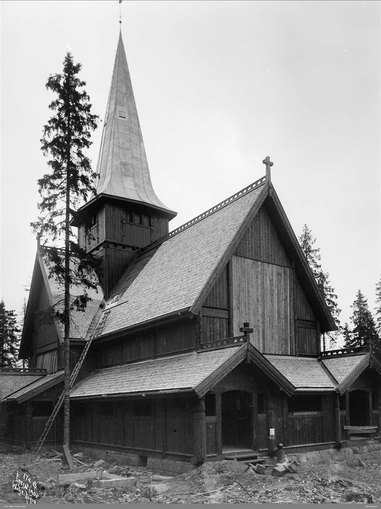
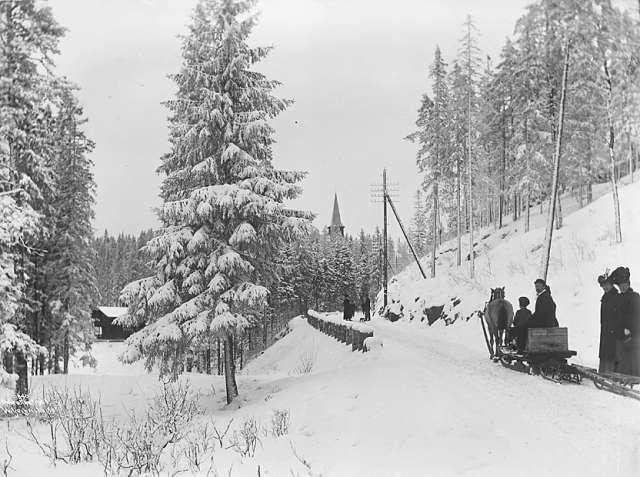
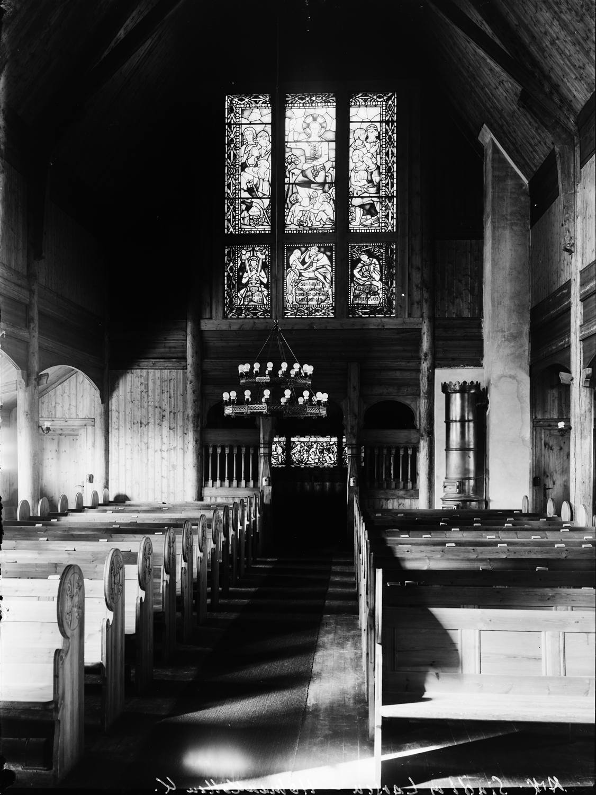

Kapellet som flyttet kirken opp i skogen
Каплиця, що перенесла церкву в ліс
«End om vi tog Herrens Hus med op i skoven», sa pastor Thore Godal under innvielsesfesten i 1903. Og det var nettopp det som skjedde: oppe i lia ved Holmenkollen reiste byen seg en stavkirkelignende trekirke for turfolket – et av Oslo-regionens mest besøkte sportskapeller, og et kjært landemerke i over hundre år.

I siste halvdel av 1800-tallet var turer i skog og mark nærmest en motesak. Turisthoteller, restauranter, sanatorier og kurbad vokste fram i åsene, og stadig flere Kristiania-folk dro oppover Holmenkollåsen for mosjon og frisk luft. Men søndagen bød på et valg: enten turen i «Kristianias herlige Skovpark», eller gudstjenesten nede i byen. Tanken bak kapellet var å slippe folk for det valget – kirken kunne flytte etter folket.
Tre ildsjeler og en tomt på ti mål
«Holmen- og Voxenselskabet» var stiftet i 1880-årene for å erverve og bygge ut området til friområde for byens befolkning. Da selskapet ble oppløst rundt 1890, overdro det en av tomtene sine – ti mål nær Holmenkollveien, som den gang het Keiser Wilhelms vei – til Kristiania kommune for å oppføre et sportskapell. Tre ivrige ildsjeler brant for ideen: veidirektør Hans H. Krag, som utvilsomt var primus motor, godt fulgt opp av borgermester Evald Rygh og hotellmannen doktor I. C. Holm.
Tidlig i 1890-årene ble det nedsatt en byggekomité med formannen professor Bredo Morgenstierne i spissen, og blant medlemmene fru Henriette Andersen-Aars, overrettssakfører J. I. Brun, byråsjef Olaf Bødtker, pastor Thore Godal, arkitekt O. B. T. Johnsen, veidirektør Krag og bryggerieier E. Ringnes. I januar 1892 sendte Krag og Morgenstierne ut en innbydelse til å bidra til byggingen, der de pekte på «den stigende Trang til et saadant Kapel» og savnet i de mange Kristiania-hjem der både eldre og yngre – og «ikke mindst Sportsungdommen» – måtte velge mellom søndagsgudstjenesten og søndagsturen.
En arkitektkonkurranse og en stavkirkedrøm
I 1894 ble norske arkitekter invitert til en konkurranse om det beste utkastet. Interessen var stor – ved fristens utløp var det kommet inn 27 tegninger. Førstepremien på 200 kroner gikk til arkitekt Peter Andreas Holger Sinding-Larsen for et utkast til en trekirke; andrepremien på 100 kroner gikk til arkitekt Lange for en stenkirke. Om vinnerutkastet sa bedømmelseskomiteen at «Planen er godt disponert og har gode Forholde».
Utkastet hadde stavkirken som forbilde og ble laget som en korskirke med praktfulle tømmerkonstruksjoner. Dette var ingen tilfeldighet: Fortidsminneforeningen, etablert i 1844 med flere malere – særlig I. C. Dahl – som talte stavkirkens sak, var arnestedet for en ung arkitektgenerasjon som søkte tilbake til norsk middelalder og trearkitektur. De bygde på egen historie, natur og identitet, og Holmenkollen kapell ble et konkret resultat av denne gryende bevisstheten om kulturarven. En stor del av tømmeret ble gitt av Kristiania kommune. Over alteret hang et krusifiks skåret i tre av billedhugger Aanonsen, kirkeklokkene til en verdi av 3 975 kroner var en gave fra gårdbruker Hilmar Holmen, og byggmester Bernt M. O. Ly fra Holmenkollveien sto for selve byggingen.
Fra kaldt bedehus til kirke
I februar 1903 ble kapellet midlertidig innviet som bedehus. Det ble holdt gudstjeneste nesten hver søndag, men komiteen måtte snart innstille – det var rett og slett for kaldt i kirkerommet senhøstes og om vinteren. Kristiania kommune overlot to store skoleovner, som ble satt opp i kjelleren, og det ble laget små åpninger i gulvet langs veggene slik at varm luft kunne sive opp i kapellet. Etter dette ble oppvarmingen tilfredsstillende, og gudstjenestene kom i gang igjen. Prestene ble «befordret op og ned for Kapellets Regning», og sanatoriene og hotellene på Holmen- og Voksenkollen bød etter tur presten med ledsager på middag (1907).

Pengene satt likevel langt inne. Byggekomiteen kostnadsberegnet kapellet i 1907 til 44 421 kroner, og det gjenstod 7 500 kroner som var vanskelige å få samlet inn. Mye kom etter personlige henvendelser og innsamlingslister rundt om i området, men komiteen fastslo med skuffelse at innsamlingsbøssene ga lite: selv om bybud flere ganger sto med bøsser på de mest befærdede stedene på Holmenkollen på selve Holmenkolldagen, kom det enkelte ganger ikke inn nok til å dekke betalingen til bybudet. Først i 1911 besluttet Vestre Aker sognestyre å overta kapellet, og den høytidelige innvielsen fant sted 24. september 1913 ved Oslo-biskop Jens Frølich Tandberg. Fra da av tjenestegjorde prestene i Vestre Aker sogn her én søndag i måneden; de øvrige gudstjenestene ble holdt av prester engasjert av «Det frivillige kirketilsyn». I 1937 ble Ris menighet opprettet, og kapellet har siden hørt til denne.

Kongens nabokirke
I 1910 ble Kongsseteren, som ligger like ved kapellet, gitt til kong Haakon og dronning Maud i kroningsgave fra det norske folk. Kongsseteren er ikke et fast tilholdssted for kongefamilien, men hver gang de er der – særlig i julehøytiden og under de tradisjonsrike Holmenkollrennene i mars – besøker de Holmenkollen kapell.
Brannen i 1992
Natt til mandag 24. august 1992 brant Holmenkollen kapell ned til grunnen. Brannvesenet fikk melding klokka 05.09 om morgenen, men allerede klokka 06.00 hadde kapellet rast sammen – det hadde trolig brent en stund før noen oppdaget det. Det eneste som sto igjen noenlunde intakt, var grunnmuren, de to trappene som førte inn til kirken fra vest, og smijernsrekkverkene på trappene. Med sin stavkirkelignende form hadde kapellet vært et kjent og kjært trekk i bybildet – og et av regionens mest besøkte sportskapeller.
Politiet konkluderte først med at brannen ikke var påsatt, men skyldtes en feil i det elektriske anlegget. Den forklaringen ble senere trukket tilbake, og det ble reist tiltale mot to menn – den ene av dem Varg Vikernes.
Gjenreist i 1996
Et tidlig ønske fra kirkelig og offentlig hold om å bygge et moderne kapell ble fort overdøvet av et folkelig krav: den nye kirken skulle ligne mest mulig på den gamle. Med halvparten av midlene fra privat innsamling tegnet sivilarkitekt Arne Sødal et nytt kapell, som sto ferdig i 1996. Det er bygget med inspirasjon fra stavkirkene, med massiv plank og søyler i vegger av tettvokst furu fra Rauland og Heidal, og buer av massive granrøtter – kun med gamle håndverksteknikker. For å få det til ble det først laget en tredimensjonal datamodell av alle bestanddelene; tegningene derfra dannet grunnlag for produksjon av delene i Vågå, som så ble kjørt på lastebil til Holmenkollen og satt sammen som et byggesett.
Det nye kapellet har fått enda mer profilering og treskjæring hentet fra dragestilen, og fungerer i dag som en moderne arbeidskirke med forsamlingssal, kjøkken og møterom i tillegg til kirkerommet. Det er allerede et kjært landemerke og en populær turistattraksjon – med opptil ett års venteliste for vielse. Der det gamle kapellet hadde et orgel med sju stemmer fra J. H. Jørgensen Orgelfabrikk (1970), har det gjenreiste kapellet et digitalt orgel av typen Allen. Og fortsatt står det der oppe ved Holmenkollbakken, med utsyn over hele byen.
«А що, як ми візьмемо Дім Господній із собою в ліс», — сказав пастор Thore Godal на святі освячення 1903 року. Саме це й сталося: високо на схилі біля Holmenkollen місто звело дерев'яну церкву, схожу на ставкірку, для любителів прогулянок — одну з найвідвідуваніших спортивних каплиць регіону Осло і дорогу серцю пам'ятку впродовж понад ста років.
У другій половині 1800-х років прогулянки лісом і полями стали майже модою. У пагорбах виростали туристичні готелі, ресторани, санаторії та водолікарні, і дедалі більше мешканців Крістіанії піднімалися на Holmenkollåsen задля руху й свіжого повітря. Але неділя ставила перед вибором: або прогулянка в «чудовому лісопарку Крістіанії», або богослужіння внизу в місті. Задум каплиці полягав у тому, щоб позбавити людей цього вибору — церква могла піти за людьми.
Троє ентузіастів і ділянка в десять молів
Товариство «Holmen- og Voxenselskabet» було засноване у 1880-х роках, щоб придбати й облаштувати цю місцевість як зону відпочинку для мешканців міста. Коли товариство розпустили близько 1890 року, воно передало одну зі своїх ділянок — десять молів (близько гектара) поблизу Holmenkollveien, яка тоді називалася Keiser Wilhelms vei, — місту Крістіанія для спорудження спортивної каплиці. Ідеєю палко горіли троє ентузіастів: дорожній директор Hans H. Krag, який, безперечно, був рушійною силою, а з ним бургомістр Evald Rygh і готельєр доктор I. C. Holm.
На початку 1890-х років було створено будівельний комітет на чолі з головою — професором Bredo Morgenstierne, а серед його членів були пані Henriette Andersen-Aars, адвокат вищого суду J. I. Brun, начальник бюро Olaf Bødtker, пастор Thore Godal, архітектор O. B. T. Johnsen, дорожній директор Krag і власник броварні E. Ringnes. У січні 1892 року Krag і Morgenstierne розіслали запрошення долучитися до будівництва, де наголошували на «дедалі більшій потребі в такій каплиці» та на нестачі, яку відчували в багатьох домівках Крістіанії, де і старші, і молодші — «і не в останню чергу спортивна молодь» — мусили обирати між недільним богослужінням і недільною прогулянкою.
Архітектурний конкурс і мрія про ставкірку
У 1894 році норвезьких архітекторів запросили на конкурс на найкращий проєкт. Інтерес був великий — до завершення строку надійшло 27 креслень. Першу премію в 200 крон отримав архітектор Peter Andreas Holger Sinding-Larsen за проєкт дерев'яної церкви; другу премію в 100 крон — архітектор Lange за проєкт кам'яної. Про переможний проєкт журі сказало, що «план добре скомпонований і має гарні пропорції».
Проєкт мав за взірець ставкірку і був задуманий як хрестоподібна церква з розкішними дерев'яними конструкціями. Це не було випадковістю: Товариство охорони пам'яток (Fortidsminneforeningen), засноване 1844 року за участі кількох художників — особливо I. C. Dahl, який обстоював справу ставкірок, — стало осередком молодого покоління архітекторів, що зверталося до норвезького Середньовіччя й дерев'яної архітектури. Вони спиралися на власну історію, природу й самобутність, і каплиця Holmenkollen стала конкретним результатом цієї пробудженої свідомості щодо культурної спадщини. Значну частину деревини подарувало місто Крістіанія. Над вівтарем висіло розп'яття, вирізьблене з дерева скульптором Aanonsen, церковні дзвони вартістю 3 975 крон були даром від господаря Hilmar Holmen, а будівництвом керував будівничий Bernt M. O. Ly з Holmenkollveien.
Від холодного молитовного дому до церкви
У лютому 1903 року каплицю тимчасово освятили як молитовний дім. Богослужіння відправляли майже щонеділі, але комітет невдовзі мусив їх припинити — у церковній залі було просто надто холодно пізньої осені та взимку. Місто Крістіанія передало дві великі шкільні печі, які встановили в підвалі, а в підлозі вздовж стін зробили невеликі отвори, щоб тепле повітря могло підніматися в каплицю. Після цього опалення стало задовільним, і богослужіння відновилися. Священників «возили туди й назад коштом каплиці», а санаторії та готелі на Holmen- og Voksenkollen по черзі частували священника із супутником обідом (1907 рік).
Та гроші збиралися важко. У 1907 році будівельний комітет оцінив каплицю в 44 421 крону, і залишалося ще 7 500 крон, які ніяк не вдавалося зібрати. Багато коштів надійшло після особистих звернень і за підписними листами по всій окрузі, але комітет із розчаруванням констатував, що скриньки для пожертв давали мало: хоча посильні (bybud) кілька разів стояли зі скриньками в найлюдніших місцях Holmenkollen у сам день Holmenkolldagen, інколи не збиралося навіть стільки, щоб оплатити роботу самого посильного. Лише в 1911 році парафіяльна рада Vestre Aker вирішила перейняти каплицю, а урочисте освячення відбулося 24 вересня 1913 року за участі єпископа Осло Jens Frølich Tandberg. Відтоді священники парафії Vestre Aker служили тут одну неділю на місяць; решту богослужінь правили священники, найняті «Добровільним церковним наглядом» (Det frivillige kirketilsyn). У 1937 році було створено парафію Ris, і відтоді каплиця належить саме їй.
Церква по сусідству з королем
У 1910 році Kongsseteren, що розташована зовсім поруч із каплицею, була подарована королю Haakon і королеві Maud як коронаційний дар від норвезького народу. Kongsseteren не є постійною резиденцією королівської родини, але щоразу, коли вони там бувають — особливо на Різдво та під час традиційних Holmenkollrennene у березні — вони відвідують каплицю Holmenkollen.
Пожежа 1992 року
У ніч на понеділок 24 серпня 1992 року каплиця Holmenkollen згоріла дотла. Пожежники отримали повідомлення о 05:09 ранку, але вже о 06:00 каплиця обвалилася — імовірно, вона горіла певний час, перш ніж її помітили. Єдине, що вціліло більш-менш неушкодженим, — це фундамент, двоє сходів, що вели до церкви із заходу, і ковані поручні на них. Завдяки своїй схожій на ставкірку формі каплиця була відомою і дорогою серцю прикметою міста — і однією з найвідвідуваніших спортивних каплиць регіону.
Спершу поліція дійшла висновку, що пожежа не була підпалом, а сталася через несправність електропроводки. Згодом це пояснення відкликали, і було висунуто звинувачення проти двох чоловіків — одним із них був Varg Vikernes.
Відбудована у 1996 році
Раннє бажання церковної та офіційної влади звести сучасну каплицю швидко заглушила народна вимога: нова церква мала якомога більше нагадувати стару. За половину коштів, зібраних приватними пожертвами, цивільний архітектор Arne Sødal спроєктував нову каплицю, яку завершили в 1996 році. Її збудовано з натхненням ставкірками — з масивних брусів і колон у стінах із щільної сосни з Rauland і Heidal, з арками з масивних ялинових коренів, і лише за допомогою давніх ремісничих технік. Щоб це вдалося, спершу створили тривимірну комп'ютерну модель усіх складових; за кресленнями з неї виготовили деталі у Vågå, які потім привезли вантажівками до Holmenkollen і зібрали, наче конструктор.
Нова каплиця отримала ще більше профілювання й різьблення, запозиченого з драконячого стилю (dragestil), і сьогодні слугує сучасною робочою церквою — окрім церковної зали, тут є зала для зібрань, кухня та кімнати для нарад. Вона вже стала дорогою серцю прикметою й популярною туристичною принадою — із чергою на вінчання завдовжки до року. Там, де стара каплиця мала орган на сім регістрів від фабрики J. H. Jørgensen Orgelfabrikk (1970), відбудована має цифровий орган типу Allen. І досі вона стоїть там, угорі біля Holmenkollbakken, з краєвидом на все місто.
Kilder
- Wikipedia – Holmenkollen kapell
- Vestre Aker Historielag, medlemsblad 1992 (basert på Nils Jacob Tønnessen: Holmenkollen kapells historie, og Aftenposten 24.8.1992)
Bildene er uten opphavsrett og kan brukes fritt. De er lastet ned fra digitaltmuseum.no.
Her er du
Slik blir du med på jakten
Finn stolpene rundt om i Vestre Aker, skann QR-koden og les historien om hvert sted. Velg et kallenavn – så samler du poeng for hvert nye sted du besøker. Ingen innlogging, ingen app.
Se kart og kom i gang